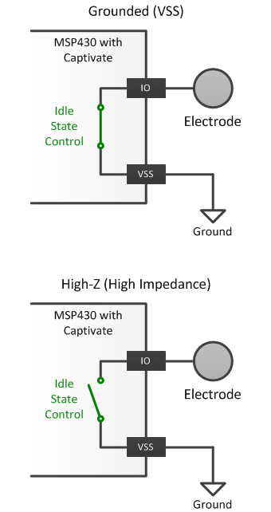

The idle state specifies the drive state of a sensor's pins when the sensor is not actively being measured. Pins have the option of being driven low to ground (VSS), or left tri-stated (high-impedance).

Implementation Notes
For most applications, pins should be grounded when not being measured. This is important especially if there are
other sensors in the system. When sensor pins (and their connected electrodes) are left floating,
they can capacitively couple with the electrodes of nearby sensors while those sensors are being measured.
This can cause cross-triggering. For some applications it is desirable to float pins (set to High-Z)when not being measured to prevent
coupling to ground. Water and moisture suppression would be an example of such a use case.
Affected Software Parameters
The Idle_State parameter corresponds to the
bIdleState
member of the
tSensor
type in the CapTIvate Touch Library.